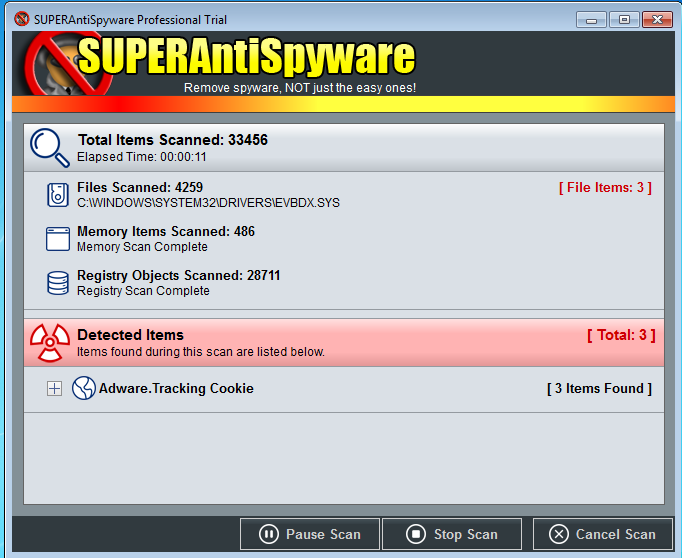

SUPERAntiSpyware Free — бесплатная программа, которая позволяет удалять с компьютера всевозможные виды вредоносного ПО (spyware, adware, malware, trojans, dialers, worms, keyLoggers, HiJackers и другие). Программа сканирует жесткие и съемные диски, память и реестр на предмет наличия вышеуказанных "паразитов".
Кроме того, это приложение восстанавливает нарушенные настройки Интернет-соединений, рабочего стола, системного реестра, умеет защитить от изменений стартовую страницу браузера, уровень безопасности браузера и многих других параметров, позволяя тем самым повысить общую безопасность компьютера.
Рис. 1. Главное окно программы
Как можно увидеть по главному окну, нас встречает довольно простой интерфейс программы.
Рис. 2. Системные настройки программы
На рисунке выше представлены системные настройки программы. Здесь можно найти и удалить скрытые программы, просмотреть все установленные программы или же просмотреть отчет о проведенном сканировании.
Рис. 3. Настройка сканирования по времени
На рисунке №3 видно, что мы можем задавать время, в которое будет проводиться сканирование системы.
Рис. 4. Выбор сканирования системы
В программе реализовано несколько видов сканирования, так можно запустить полное сканирование системы или же сканирование критических точек, в этом случае будут проверены все системные папки, а также установленные программы.
Рис. 5. Запуск быстрого сканирования системы
Рассмотрим быстрое сканирование системы.
Рис. 6. Быстрое сканирование системы
Рис. 7. Обнаружение SpyWare cookies
В ходе сканирования программа обнаруживает так называемые шпионские cookie, хотя эти фрагменты данных могут являться безопасными.
Рис. 8. Завершение сканирования
Как можно увидеть сканирование прошло действительно быстро, всего 26 секунд. В ходе сканирования было обнаружено 135 “опасных” элементов.
Рис. 9. Список "опасных" элементов
После выполнения сканирования мы можем просмотреть список со всеми обнаруженными элементами. Но как можно увидеть, почти вся часть элементов составляют cookie-файлы браузера.
Рис. 10. Процесс удаления “опасных” элементов
После все файлы подвергаются уничтожению.
Рис. 11. Завершение удаления обнаруженных элементов
После удаления элементов нам рекомендуется перезагрузить систему.
Рис. 12. Проверка программы на поиск вируса
Для проверки работоспособности программы был скачан специальный тестовый вирус “EICAR.EXE”. Данный файл состоит из небольшой текстовой строки. Тестовый вирус придумали специально для проверки работоспособности современных антивирусов. При попытке запуска данного файла программа блокирует доступ и помещает файл в карантин.
Программа является довольно полезной. Так, можно выставить сканирование на каждый день, и программа таким образом будет удалять ненужные файлы, cookie-файлы, или же вирусы, в случае их обнаружения.